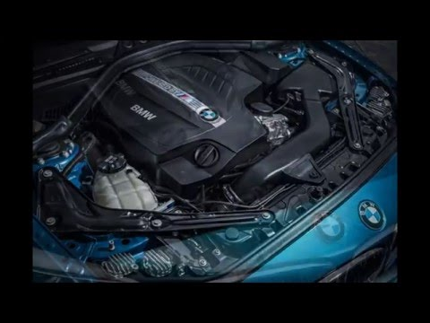

Содержание
История компании
По официальной версии, история создания BMW (момент образования) приходится на июль 1917 года. Годом позже кампания уже перерастает в акционерное общество. В тоже время появляется и первый логотип компании — он был похож на пропеллер в небе. Позже лого был доведен до четырёх секций, вписанных в круг и включающий в себя всем известные два цвета — белый и синий. Есть еще одна версия, по которому цвета, взятые для логотипа обозначали всего лишь действующий флаг Баварии. Этот знак прижился у BMW до наших дней еще с 1929 года.
История двигателей
БМВ изначально была образована как компания по выпуску двигателей, и не так важно, что двигатели планировалось производить для авиастроения! Как бы там ни было, основывая производство, учредители сделали ставку на качество именно этой части машин – двигатели для своих автомобилей и мотоциклов компания всегда конструировала, собирала и совершенствовала самостоятельно, добиваясь стабильной работы и максимальной производительности. Выпускаемые в самом начале, двигатели, в основном, имели военное назначение и делались по заказу для немецкой армии. А вот после окончания Второй мировой войны и заключения Версальского договора, запрещающего производить военную технику, заводу пришлось направить свою деятельность немного в другое русло. Первыми, выпускаемыми компанией двигателями, были примитивные М10-М50, это было первое поколение моторов, к которым еще не предъявлялись особенные требования, ремонт их был частым и насколько простым, что временами осуществлялся самостоятельно владельцами машин. Усовершенствованные со временем двигатели, имели механизм управления фазами газораспределения впускного клапана – VANOS. Их уже можно отнести к моторам нового поколения. Здесь значительно увеличена износостойкость двигателя и учитываются экологические параметры работы. Следующий этап заключается в термостате, открытие которого происходит при 97 градусах, это дало возможность идеально приспособить мотор для езды в городских условиях. В таких двигателях присутствует функция полного сгорания топлива. Подобные двигатели (а это М54, M52TU) работают с электронной педалью газа, чувствительность которой повышена в десятки раз. Этот аппарат весьма прихотлив к выбору марки топлива. Качество заливаемого продукта напрямую влияет на его правильную работу и длительность эксплуатации.
Взгляд в будущее
Компания, пережившая не один кризис, совершившая множество технических открытий и правильных маркетинговых ходов, прочно стоящая на ногах, просто обречена на удачную карьеру. Отмечая столетний юбилей, компания БМВ поставила для себя цель «Следующие 100 лет». В настоящее время ведутся исследования рынков сбыта и потребности покупателей. Тщательный анализ данных приведет к разработке и производству новейших типов машин, учитывая современные цифровые технологии. В активной разработке находятся аддитивные технологии и тотальная автоматизация процессов, цифровой интеллект, возможность роботизированного управления транспортным средством и другие инновации. Особенное внимание компания BMW уделяет и охране окружающей среды, она первой в мире ввела для своих производств требования по соблюдению экологических норм. В будущем планируется уделить этой проблеме основное внимание, учитывая новые виды топлива, электромобили и тому подобные меры. Компания БМВ была, есть и будет оставаться одним из лидеров мировой автомобилестроительной отрасли. Качество, экстерьер, технические данные и удобство в управлении, неизменно сопровождающие абсолютно всю продукцию этой марки, уже более ста лет говорят сами за себя.